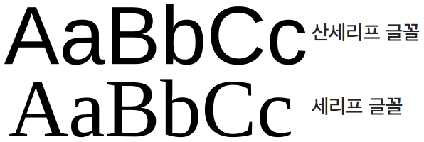
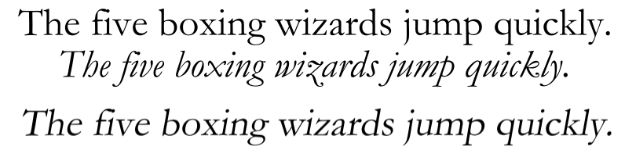

컨텐츠
1. Font
폰트는 우리가 사용하는 글자를 화면에 표시하기 위해 사용해주는 수단입니다. 운영체제별로, 브라우져 별로 기본 폰트가 전부 다릅니다.
각 운영체제별 기본폰트
- 윈도우 : 맑은고딕
- 사파리 : 명조(serif)
-
사파리를 제외한 나머지 브라우져 : 고딕(sans-serif)
 -
안드로이드
- 삼성 : 삼성고딕
- 엘지 : LG스마트 고딕
- 안드로이드4.4.4 이상 : 본고딕(Noto Snas), 4.4.3이하 : Droid sans fallback
- 아이폰 : APPLE SD Gothic NEO(한국), ios9 이전에는 Helvetica NEUE --> 업그레이드 되어 San Francisco(영문)
2. font-family
font-family는 폰트의 그룹입니다. 각 나라별로 폰트의 이름이 어떠한지 몰라도 동일한 스타일의 폰트 사용을 가능하게 해줍니다. 앞에서 부터 해석하며 앞의 폰트가 존재하지 않으면 그 뒤의 폰트를 렌더링 합니다. 영문만 표시 가능할 때도 마찬가지 입니다. IE7의 경우 한글 폰트명과 영문 폰트명을 다 써주지 않으면 인식을 못하는 문제가 있습니다.
body{
font-family: "San Francisco","helvetica NEUE", "APPLE SD Gothic NEO", "Dotum", "돋음", sans-serif;
}
3. Font의 단위
브라우저에서 폰트의 기본적인 크기는 16px입니다. (여기서 사용하는 단위들은 HTML의 모든 요소에 적용 가능합니다.)
-
px :
—> 디지털 화면에서의 최소단위. 길이는 기계의 화면 밀도(ppi)에 따라 달라집니다.
-
em :
—> 부모의 폰트사이즈를 기준으로 합니다. 부모의 사이즈가 16px이라면 1em = 16px입니다. 계산하기가 어렵습니다만 부모에 비례해서 늘어나거나 줄어들기 때문에 사이즈 변경시 유동적으로 대응하기 좋습니다.
-
% (percent) :
—> 기본사이즈에 대한 상대적 사이즈 조정이 가능합니다. (상위 엘리먼트에 대한 상대적인 크기를 가지며 em과 비슷합니다.
-
rem :
em과 성질은 같지만 부모의 폰트 사이즈가 아닌 root (html)의 폰트 사이즈를 기준으로 정해집니다.(root + em = rem) em에 비해 계산하기가 쉬워졌습니다. 하지만 브라우저 지원률이 낮습니다…..(폰트만은 IE9 부터, 모든 기능은 IE 11부터 지원합니다.ㅠ) 자세한 사항은 http://wit.nts-corp.com/2014/11/05/2317여기를 참고하세요.
4. Font의 여러가지 속성들
-
line-height :
—> 행과 행 사이의 간격입니다. 폰트사이즈를 따라갑니다.
font-size: 16px; line-height: 100% (--> 16px과 같은 의미입니다.)line-height의 기본값은 폰트별로 다르기 때문에 선언해서 고정시켜버립시다.(16px 에는 180%가 가장 아름답다고 합니다…) 텍스트의 크기가 행간의 크기를 넘지 않도록 주의합시다! 유연한 크기 조절을 위해 %단위, em 으로 줍니다.
-
font-weight :
—> 폰트의 굵기입니다. 표현방식으로는 normal, lighter, bold, bolder, 100 ~ 900까지 있으며 400(normal)이 기본입니다. 하지만 폰트에 따라 값이 지원되는 경우가 다릅니다 때문에 맞는 굵기가 없으면 가장 가까운 굵기로 자동변경됩니다.
p{ font-weight: bold; } 이렇게 키워드로 선택할 수 있으며 혹은 p{ font-weight: 900; } 이렇게 수치로 입력할 수도 있습니다. -
font-style:
—> 폰트의 스타일을 정의합니다.
p{ font-style: italic; }italic : 필기체 기울임꼴
oblique : 기울임꼴(지원 브라우저가 적습니다...)
위에서부터 roman, italic, oblique. oblique는 roman를 기울였다고 생각하시면 됩니다.
-
text-align :
—> 텍스트의 정렬입니다. right, center, left, justify(줄바꿈이 일어날 때만 발생합니다.)가 있습니다.
p{ text-align: center; } -
text-decoration :
—> 텍스트를 꾸밉니다. line-through : 텍스트 취소선, underline : 밑줄, overline : 윗줄, none : 효과 없애기 같은 기능이 있습니다.
p{ text-decoration: overline; } -
text-indent :
—> 들여쓰기입니다. 마이너스 기호로 사용할 수도 있습니다. 글씨 지울 때 많이 사용합니다.
p { text-indent: 50px; } -
letter-spacing :
—> 글자간격입니다. 기본 간격은 1px 이며 소수점(소수점 픽셀을 서브픽셀이라고 부릅니다), 마이너스도 지원합니다. 기본값은 1px입니다. **’IE8까지는 소수점을 지원하지 않습니다.’**
p { letter-spacing: 2px; } -
white-space :
—> 공백을 어떻게 처리할지 결정합니다.
wrap : 공백문자가 있으면 줄바꿈을 합니다.(기본값입니다.)
nowrap : 무조건 한줄로 씁니다.
.class{ white-space: nowrap; overflow: hidden; text-overflow: ellipsis; } 말줄임을 표현하고 싶으면 위와 같이 코드를 작성합니다.
CSS Position
—> 좌표 시스템입니다. x축과 y축, z축의 좌표를 이용해 요소의 위치를 잡습니다.
-
position: static
—> 포지션의 기본값. 명시적으로 사용하는 일은 거의 없습니다. position에 여러 속성을 넣었다가 초기화시키고 싶을 때 사용합니다. 좌표 시스템을 사용하지 않습니다.
-
position: relative
—> 포지션의 상대값. 웹의 flow를 깨트리지 않습니다.(좌표를 이용해 이동하긴 하나 자신의 '스택' 위치를 항상 인식하고 있습니다. 다른 요소들은 포지션 위치를 인식하지 못합니다.) 좌표를 넣는 속성은 top, left, bottom, right. 좌표시스템을 사용하는 요소들에서 사용 가능합니다.(position: static은 제외합니다.)
-
position: absolute
—> 포지션의 절대값. 자기의 부모가 좌표시스템을 사용할 경우 자기 부모의 영점, 부모가 좌표시스템을 사용하지 않을 경우 조상의 영점, 아무도 좌표 시스템을 사용하지 않을 경우 body의 영점을 기준으로 합니다. 웹의 flow의 영향을 받지 않습니다. 즉, 다른 요소들이 absolute된 요소의 존재를 알 수 없습니다.(float과 유사합니다.) 때문에 웹의 flow를 지키기 위해 relative의 자식으로 많이 사용합니다.
-
position: fixed
—> 포지션의 고정값. absolute와 성질은 비슷. 무조건 브라우저(body)의 영점이 기준이 됩니다. transform 요소의 자식일 경우에는 제대로 동작하지 않습니다. IOS에서 버그가 매우 많습니다. 거의 사용하지 않아요 ㅠ